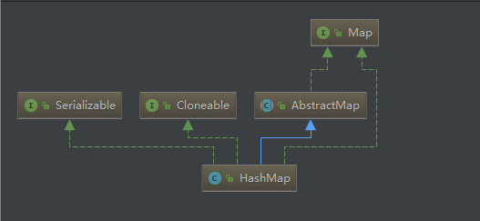
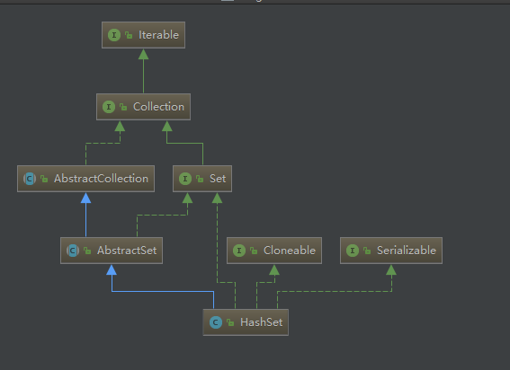

HashMap与HashSet介绍 HashMap是Java为我们提供的一个存放键值对的容器，通过键的hash值定位存储位置，具有很快的访问速度。但是其遍历顺序是不确定的，这里所说的不确定是指其遍历的顺序与放入顺序不一致、多次遍历输出顺序不一致(可能会放进数据导致reHash，改变原有顺序)。HashMap允许有一个null的键，对于值没做要求。HashMap也是个非线程安全的容器，在并发环境下可以使用ynchronizedMap方法使HashMap具有线程安全的能力，或者使用ConcurrentHashMap。
HashSet是Java为我们提供的一个集合类容器，他不允许容器内元素重复，底层采用HashMap实现(适配器模式)。
以下是HashMap的UML图与HashSet的Uml图：


HashMap源码分析 HashMap数据结构 HashMap采用了一种数组+链表+红黑树(JDK1.8新增)的数据结构；
HashMap实际存放数据的是一个叫Entry的Node节点，它的定义如下：
1 2 3 4 5 6 7 8 9 10 11 12 13 14 15 16 17 18 19 20 21 22 23 24 25 26 27 28 29 30 31 32 33 34 35 36 37 38 39 static class Node <K ,V > implements Map .Entry <K ,V > final int hash; final K key; V value; Node<K,V> next; Node(int hash, K key, V value, Node<K,V> next) { this .hash = hash; this .key = key; this .value = value; this .next = next; } public final K getKey () return key; } public final V getValue () return value; } public final String toString () return key + "=" + value; } public final int hashCode () return Objects.hashCode(key) ^ Objects.hashCode(value); } public final V setValue (V newValue) V oldValue = value; value = newValue; return oldValue; } public final boolean equals (Object o) if (o == this ) return true ; if (o instanceof Map.Entry) { Map.Entry<?,?> e = (Map.Entry<?,?>)o; if (Objects.equals(key, e.getKey()) && Objects.equals(value, e.getValue())) return true ; } return false ; } }
存入HashMap里的数据均用Entry封装起来，通过键值定位到数组的位置，当该位置为空时，放入Entry元素，当该位置不为空时通过equals比较该位置与放入元素的键值，当键值相等时直接替换，当键值不相等时，采用拉链法解决hash冲突。
拉链法解决hash冲突：当hash冲突发生时，通过在该位置建立链表，将所有hash值相同但是equals不相等的元素通过链表链起来解决hash冲突；
当HashMap中拉链的长度超过8时，HashMap将链表数据结构转换为红黑树，此时的查找时间复杂度降低为O(log n)。
HashMap方法解析 get方法 HashMap get方法源码如下：
1 2 3 4 public V get (Object key) Node<K,V> e; return (e = getNode(hash(key), key)) == null ? null : e.value; }
首先先拿到key的hash值，然后通过hash值定位到数组中该hash位置的node，然后返回node的value；
计算key的hash值方法hash():
1 2 3 4 static final int hash (Object key) int h; return (key == null ) ? 0 : (h = key.hashCode()) ^ (h >>> 16 ); }
计算一个key的hash值得具体算法是：当key为null时，hash值为0，不为null时，首先得到该key的hashCode，然后异或上key的hashCode值无符号右移16位。
通过hash值得到数组指定位置node元素方法getNode()：
1 2 3 4 5 6 7 8 9 10 11 12 13 14 15 16 17 18 19 final Node<K,V> getNode (int hash, Object key) Node<K,V>[] tab; Node<K,V> first, e; int n; K k; if ((tab = table) != null && (n = tab.length) > 0 && (first = tab[(n - 1 ) & hash]) != null ) { if (first.hash == hash && ((k = first.key) == key || (key != null && key.equals(k)))) return first; if ((e = first.next) != null ) { if (first instanceof TreeNode) return ((TreeNode<K,V>)first).getTreeNode(hash, key); do { if (e.hash == hash && ((k = e.key) == key || (key != null && key.equals(k)))) return e; } while ((e = e.next) != null ); } } return null ; }
首先，通过(n - 1) & hash得到元素在数组中的位置然后取出元素，其中n是数组的总长度；当这个元素与要取的key相等(==与equals)时，该元素就是要取得元素；当不相等时，即判断为hash冲突了；当hash冲突时，HashMap通过查找链表(红黑树)的方式查找该位置的拉链(红黑树)，直到找到一个元素与key equals相等时返回或者没找到返回null，此时的查找就变为对链表或红黑树的遍历。
put方法 HashMap put方法源码如下：
1 2 3 4 5 6 7 8 9 10 11 12 13 14 15 16 17 18 19 20 21 22 23 24 25 26 27 28 29 30 31 32 33 34 35 36 37 38 39 40 41 42 43 44 45 46 47 48 49 50 51 52 53 54 55 56 57 public V put (K key, V value) return putVal(hash(key), key, value, false , true ); } final V putVal (int hash, K key, V value, boolean onlyIfAbsent, boolean evict) Node<K,V>[] tab; Node<K,V> p; int n, i; if ((tab = table) == null || (n = tab.length) == 0 ) n = (tab = resize()).length; if ((p = tab[i = (n - 1 ) & hash]) == null ) tab[i] = newNode(hash, key, value, null ); else { Node<K,V> e; K k; if (p.hash == hash && ((k = p.key) == key || (key != null && key.equals(k)))) e = p; else if (p instanceof TreeNode) e = ((TreeNode<K,V>)p).putTreeVal(this , tab, hash, key, value); else { for (int binCount = 0 ; ; ++binCount) { if ((e = p.next) == null ) { p.next = newNode(hash, key, value, null ); if (binCount >= TREEIFY_THRESHOLD - 1 ) treeifyBin(tab, hash); break ; } if (e.hash == hash && ((k = e.key) == key || (key != null && key.equals(k)))) break ; p = e; } } if (e != null ) { V oldValue = e.value; if (!onlyIfAbsent || oldValue == null ) e.value = value; afterNodeAccess(e); return oldValue; } } ++modCount; if (++size > threshold) resize(); afterNodeInsertion(evict); return null ; }
HashMap在put一个元素的时候会去调用其putVal方法，在putVal方法中，首先会去检测用来存储元素的数组是否已经初始化了，因为HashMap与ArrayList一样采用了延迟为数组分配空间的策略，我们可以来看下它的构造方法：
1 2 3 public HashMap () this .loadFactor = DEFAULT_LOAD_FACTOR; }
默认的构造方法中，就设置了一个扩容因子。
若数组已经初始化了，HashMap会通过(n - 1) & hash计算出该元素在数组中的位置，当该位置没有元素时，直接放入，当该位置已经有元素了，HashMap开始判断是否与该位置的元素发生了Hash冲突。
当发生了Hash冲突时，HashMap会判断该位置是通过红黑树还是链表，然后通过红黑树或者链表添加数据的方式添加新元素。
最后HashMap会检查此时数组的长度，当长度超过数组容量*扩容因子时会开始扩容的过程。
HashMap扩容函数resize方法：
1 2 3 4 5 6 7 8 9 10 11 12 13 14 15 16 17 18 19 20 21 22 23 24 25 26 27 28 29 30 31 32 33 34 35 36 37 38 39 40 41 42 43 44 45 46 47 48 49 50 51 52 53 54 55 56 57 58 59 60 61 62 63 64 65 66 67 68 69 70 71 72 73 74 75 76 77 78 79 80 81 82 83 84 85 86 87 88 89 90 91 92 93 94 final Node<K,V>[] resize() { Node<K,V>[] oldTab = table; int oldCap = (oldTab == null ) ? 0 : oldTab.length; int oldThr = threshold; int newCap, newThr = 0 ; if (oldCap > 0 ) { if (oldCap >= MAXIMUM_CAPACITY) { threshold = Integer.MAX_VALUE; return oldTab; } else if ((newCap = oldCap << 1 ) < MAXIMUM_CAPACITY && oldCap >= DEFAULT_INITIAL_CAPACITY) newThr = oldThr << 1 ; } else if (oldThr > 0 ) newCap = oldThr; else { newCap = DEFAULT_INITIAL_CAPACITY; newThr = (int )(DEFAULT_LOAD_FACTOR * DEFAULT_INITIAL_CAPACITY); } if (newThr == 0 ) { float ft = (float )newCap * loadFactor; newThr = (newCap < MAXIMUM_CAPACITY && ft < (float )MAXIMUM_CAPACITY ? (int )ft : Integer.MAX_VALUE); } threshold = newThr; @SuppressWarnings ({"rawtypes" ,"unchecked" }) Node<K,V>[] newTab = (Node<K,V>[])new Node[newCap]; table = newTab; if (oldTab != null ) { for (int j = 0 ; j < oldCap; ++j) { Node<K,V> e; if ((e = oldTab[j]) != null ) { oldTab[j] = null ; if (e.next == null ) newTab[e.hash & (newCap - 1 )] = e; else if (e instanceof TreeNode) ((TreeNode<K,V>)e).split(this , newTab, j, oldCap); else { Node<K,V> loHead = null , loTail = null ; Node<K,V> hiHead = null , hiTail = null ; Node<K,V> next; do { next = e.next; if ((e.hash & oldCap) == 0 ) { if (loTail == null ) loHead = e; else loTail.next = e; loTail = e; } else { if (hiTail == null ) hiHead = e; else hiTail.next = e; hiTail = e; } } while ((e = next) != null ); if (loTail != null ) { loTail.next = null ; newTab[j] = loHead; } if (hiTail != null ) { hiTail.next = null ; newTab[j + oldCap] = hiHead; } } } } } return newTab; }
这里需要讲一下的，扩容时通过e.hash & oldCap判断元素是否需要移动，具体示例如下：
示例1：
通过e.hash & oldCap判断元素是否需要移动：
通过(e.hash & (oldCap-1))计算得到的下标位置：
示例2：
通过e.hash & oldCap判断元素是否需要移动：
通过(e.hash & (oldCap-1))计算得到的下标位置：
HashSet源码分析 HashSet是通过HashMap实现的，首先我们来看下Hashset的构造函数：
1 2 3 4 5 6 7 8 9 10 11 12 13 14 15 16 17 18 19 20 public HashSet () map = new HashMap<>(); } public HashSet (Collection<? extends E> c) map = new HashMap<>(Math.max((int ) (c.size()/.75f ) + 1 , 16 )); addAll(c); } public HashSet (int initialCapacity, float loadFactor) map = new HashMap<>(initialCapacity, loadFactor); } public HashSet (int initialCapacity) map = new HashMap<>(initialCapacity); } HashSet(int initialCapacity, float loadFactor, boolean dummy) { map = new LinkedHashMap<>(initialCapacity, loadFactor); }
通过HashSet的构造函数我们就能略知一二，HashSet有个map的成员变量保存了一个HashMap的实例。
HashSet的add方法：
1 2 3 public boolean add (E e) return map.put(e, PRESENT)==null ; }
HashSet的add方法很简单，就一行代码；成员变量PRESENT是new出来的一个static final的Object对象。
HashSet通过将值作为HashMap的key，一个static final的Object对象作为value用来实现了一个不可重复的set容器
思考